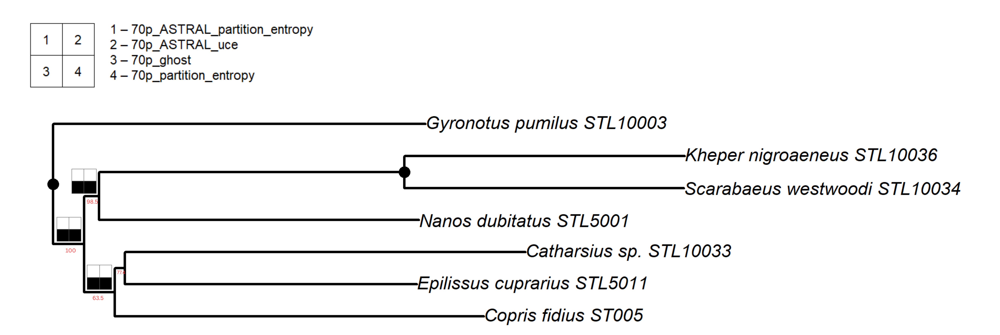
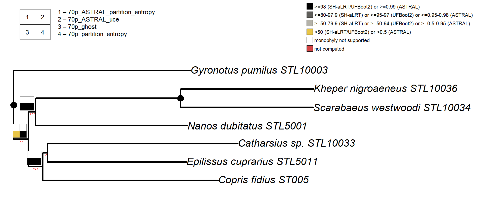

phylorug is an R package for comparing and visualizing clade recovery and support across multiple phylogenetic trees. It takes a set of trees from different inference pipelines, datasets, or statistical models, but inferred from the same set of taxa. It draws a compact coloured grid, a rug at each internal node of a reference tree, showing which clades are stable across trees and which are not. Nodes recovered by all trees appear as solid dots; nodes that differ get a rug visualizing presence/absence and support strength of that specific clade.
Overview
Phylogenetic trees with hundreds or even thousands of taxa has become common nowadays, and as sequencing technologies become cheaper and datasets grow, trees will only get larger. Additionally, modern phylogenomic studies routinely produce multiple species trees for the same underlying hypothesis. Researchers combine different data types (morphology, UCEs, transcriptomes, whole genomes), apply different analytical strategies (concatenation with varying partitioning schemes, coalescent methods, site-heterogeneous models), use different alignment approaches, and employ different inference software (IQ-TREE, ASTRAL, MrBayes, RAxML). Each combination yields a tree with its own support values in its own format, such as ultrafast bootstrap, SH-aLRT, posterior probability, and local posterior probability etc, and the central question becomes: which nodes hold up across methods, and how strongly?
The rug on tree node concept for comparing clade recovery across analytical conditions was introduced by Wheeler (1995) and popularized as “Navajo rugs” by Giribet (2003). Software to automate these plots, Cladescan (Sanders 2010) and YBYRÁ (Machado 2015), both of which are no longer maintained, were designed for parsimony parameter sensitivity rather than modern multi-method phylogenomic comparison. Additionally, no existing tool maps clade recovery or heterogeneous support values from multiple inference pipelines onto a single tree within R.
phylorug maps clade recovery and support values from any number of independently inferred phylogenetic trees onto a single reference topology as a rug plot. It operates in two modes:
Presence mode

Black/white cells showing whether each tree recovers a given clade. A direct conceptual descendant of Wheeler’s (1995) space plots, extended beyond parameter sensitivity analysis to compare any set of independently inferred trees.Support Mode

Black, grey, yellow, white, and red cells showing how strongly each analysis supports a given clade. Each support value is binned on its own metric’s scale. Different formats are never rescaled or cross-compared numerically. Default thresholds are provided, but users are recommended to set their own.The entire workflow runs in R, from reading raw tree files to publication-ready figures, just a few lines added to an existing phylogenetic script. The package was developed around a 316-taxon dung beetle phylogenomic dataset (Lopes et al. 2024) and tested with simulated trees of over 700 taxa across 15 analyses. Three real-world datasets are bundled with the package so users can try the pipeline on real data before applying it to their own.
Quick example
library(phylorug)
# Load example trees from the package data
data(sample_trees)
# Select backbone and comparison trees
backbone <- sample_trees[["70p_uce"]]
others <- sample_trees[names(sample_trees) != "70p_uce"]
# Validate all trees share same set of taxa (recommended but optional)
check_taxa(backbone, others)
# Build the node presence matrix
npm <- node_presence_matrix(backbone, others, support_type = c(
"70p_ASTRAL_partition_entropy" = "lpp",
"70p_ASTRAL_uce" = "lpp",
"70p_ghost" = "ufboot",
"70p_partition_entropy" = "ufboot")
# Presence mode: Which analyses recover each clade?
plot_phylorug(backbone, npm)
# Support mode: How strongly?
plot_phylorug(backbone, npm, mode = "support"))Core functions
phylorug provides six functions that cover the full workflow from raw tree files to publication-ready figures:
-
read_trees()reads all Newick and Nexus tree files from a directory. So you don’t need to load each file individually. -
node_presence_matrix()builds the comparison matrix recording which clades are recovered by which analyses, along with their support values. -
plot_phylorug()draws the rug plot on a reference tree in presence or support mode, with automatic normalization of heterogeneous support formats.
That is the basic pipeline: read -> matrix -> plot. Four additional helpers are available when your data needs them:
check_taxa()Validates that the backbone and comparison trees share an identical set of taxa, reporting any missing or extraneous tips. Use this diagnostic function betweenread_trees()andnode_presence_matrix()to pinpoint exact tip mismatches before the pipeline halts.translate_tips()Rename tip labels between naming conventions using a lookup table (e.g. specimen codes to species names).prune_to_shared()drops taxa that are not present in all trees, keeping only the shared set.Useful when comparison trees lack some taxa found in the backbone.
-add_tree() Appends new comparison trees directly to an existing node presence matrix (the object generated by node_presence_matrix()) without requiring a complete recalculation of the pipeline.
You can learn more about each step in vignette("phylorug").
Additional features
- Handles compound IQ-TREE labels (e.g.
SH-aLRT/UFBoot2). User selects which metric to use viasupport_col - Treats a bare
"multiPhylo"as one analysis (a pool of tied-optimal trees). Cell shading reflects the proportion of pool trees recovering the clade, from white (none) through grey to black (all) - Supports both
"inside"and"outside"rug positioning relative to the tree - Backbone support values can be displayed alongside rug cells via
show_support - Unanimous nodes are collapsed to dots by default;
rug_on_identical = TRUEforces full display rugs to reveal support variation - Saves directly to PDF, PNG, or JPEG via the
fileargument.
Getting help
An overview of the package: ?phylorug
If you find a bug or have a feature request, please open an issue on GitHub.
Citation
If you use phylorug in a publication, please cite:
Ahamed, M.R., Tarasov, S., and Arias, J.S. (2026). phylorug: Visualize Clade Recovery and Support Across Phylogenetic Trees. R package version 0.1.0. https://github.com/mdrifathahamed/phylorug
Acknowledgements
This package was developed at the Finnish Museum of Natural History (LUOMUS), University of Helsinki, as part of an MSc thesis in Ecology and Evolutionary Biology under the supervision of Sergei Tarasov and J. Salvador Arias.
The rug-plot concept traces to Wheeler (1995), was named “Navajo rugs” by Giribet (2003), and automated by Sanders (2010, Cladescan) and Machado (2015, YBYRÁ). phylorug extends this lineage into R and beyond parameter sensitivity to modern phylogenomic workflows.